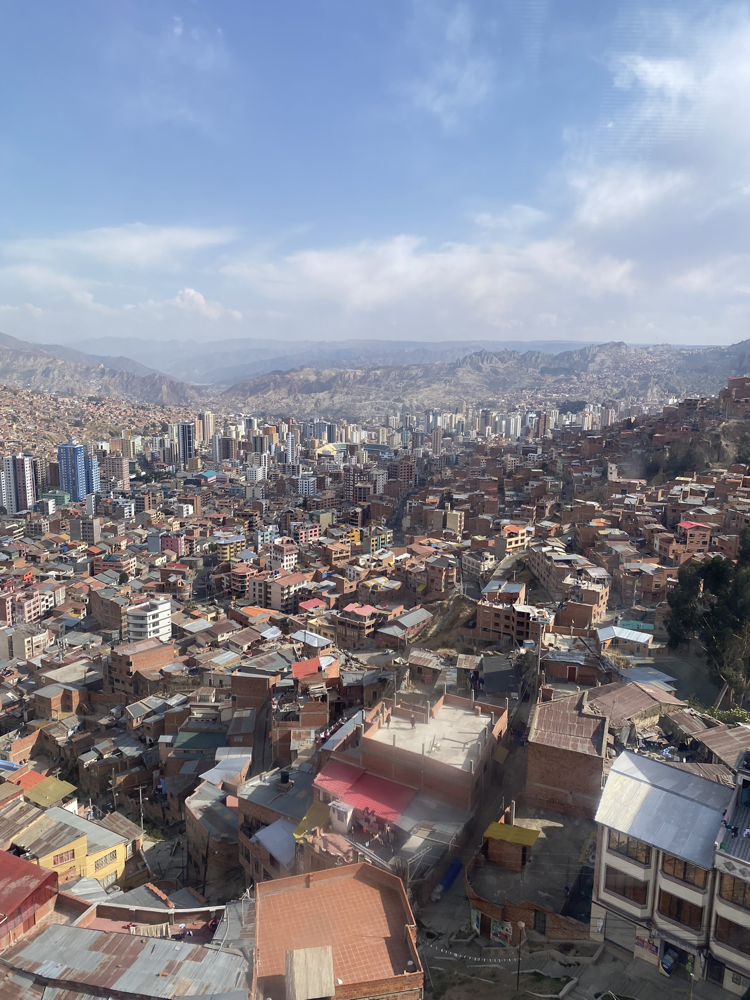
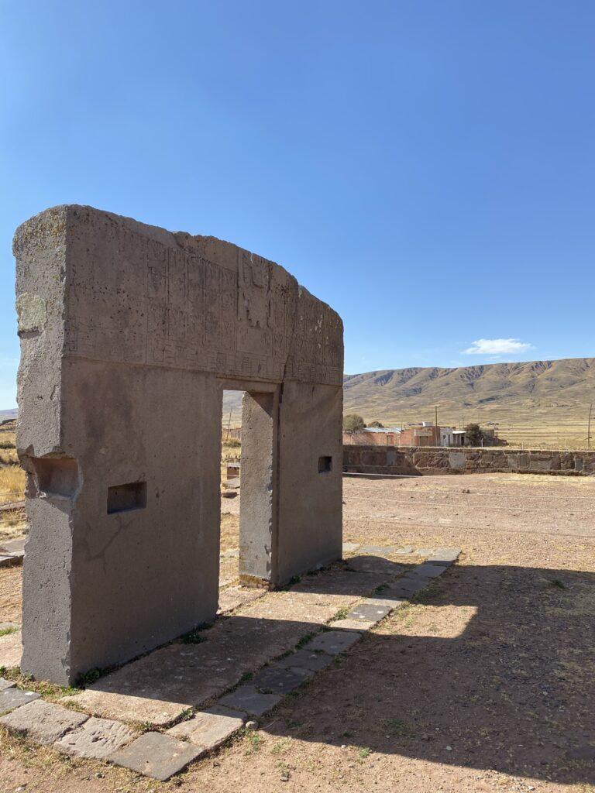
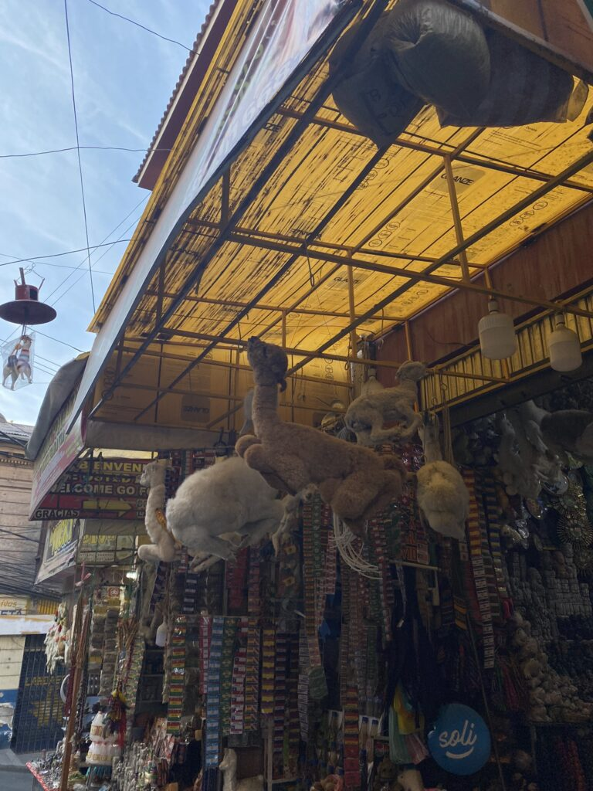

La Paz, you’ll hate it and you’ll love it. Buiten het onoverzichtelijke centrum vol pitoreske straatjes en overschot aan achterbuurten wachten de avonturen in de jungle en zelfs in de sneeuw. Maar het reizigershart wordt even tot stilstand geroepen.
Een tijdje aan bed gekluisterd door een dergelijk virus is er weer genoeg tijd om te lezen wat er in de Westerse wereld afspeelt na een intensieve reisperiode. Zo verwacht Van Gaal met een twijfelachtige selectie wereldkampioen te worden, heb ik vrijgezellendag helemaal gemist en zijn de VS nog verdeelder dan al gedacht. Het overschot aan tijd motiveert me bovendien om eindelijk eens Harry Mulisch’ meesterwerk te beproeven.

Naar het verleden
Te ongeduldig om het roepende avontuur te missen, maak ik wel een rondje door de boven de stad uittorende kabelbanen en wagen we ons richting Tiwanaku. Hoewel het een beroemd, oeroud oord is dat zou uitgroeien tot de hoofdstad van het Zuidelijke Inca-rijk, blijkt het bijzonder lastig om iemand te vinden die ons erheen brengt. Vlakbij het vliegveld treffen we uiteindelijk een busstation waar je in een taxi moet gaan zitten totdat die toereikend is volgepropt om te vertrekken. Een aantal grind- en snelwegen en gevaarlijke inhaalacties later arriveren we weer eens in the middle of nowhere.
Weinig andere stervelingen blijken geïnteresseerd in het grote landgoed uit 200, dat bepaalt geen Machu Picchu is. Hoewel het nederig maakt dat de opgegraven bouwwerken zo oud zijn, blijft de imposante waarde tot een minimum beperkt en is een korte wandeling langs het hoofplein, de zonnepoort en het aquaduct genoeg. De omliggende musea tonen de goedbewaarde gereedschappen en wapens.
In het hoogland van de Andes was Tiwanaku het centrum van een groot deel van Zuid-Amerika, nog voor de bloei van de Inca’s, het politiek en cultureel hoogontwikkelde Indianenvolk. Met zo’n miljoen onderdanen moet de voedsel- en watervoorziening hier revolutionair geweest zijn.

De route des doods
Voor mij komt het nog te vroeg en dus moet Luc zich alleen wagen aan de geboekte mountainbike tocht. De 64 kilometer lange ‘Death Road’, waarop je in een paar uur 2500 meter afdaalt, doet bijna haar naam eer aan. In de volle groep klettert een toerist na een inhaalactie meters van de afgrond, maar hij wordt inclusief fiets weer ongehavend naar boven getrokken.

Heksenmarkt
De naar verluidt gevaarlijke protesten rond de onvrede over een uitgestelde volkstelling blijven uit. Rondjes door de rommelige stad typeren zich met het ontwijken van het chaotische verkeer en hellingen op- en afstrompelen. De verterende straatjes in het centrum zijn om te koesteren en worden gedomineerd door de Mercado de las Brujas, de meest hallucinante heksenmarkt van het continent. Voor de ingang van de meeste kramen hangen dode lama’s en hun foetussen, die je ter geluk onder je nieuwe huis moet begraven. De meer welvarende Boliviaan gebruikt een levend exemplaar. Ook kikkers, slangen en schildpadden zijn in de aanbieding, naast de seksbevorderende toverdrankjes en geluksbrengende amuletten en beeldhouwkunsten. De kleurrijke luchtversieringen en hellende kasseien maken van de buurt een sprookjeswereld.
We zijn helemaal in het noorden van het Bolivia en dus dicht bij de Peruviaanse grens. Hier wacht de jungle met haar grijpgrage piranha’s en spelende dolfijnen. Daarna is de laatste bestemming van dit wonderbaarlijke land het hoogstgelegen meer ter wereld: Titicaca.